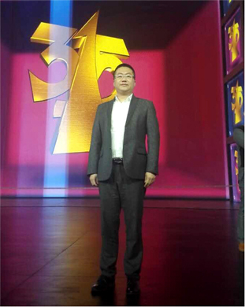
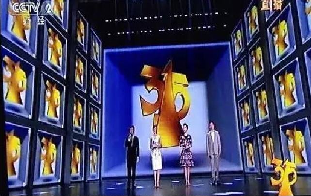

全盛资本董事长刘阳先生受邀参加央视315晚会
2016-3-29 来源：全盛资本 作者：全盛资本
3月15日，全盛资本集团刘阳先生受邀参加了中央电视台3·15晚会的直播。作为金融创新服务模式的代表，刘阳先生在现场也深切感受到金融行业诚信态度与社会责任对于推动整体社会经济发展的重要性，要身体力行的进行诚信精神建设，树立良好的行业风气。
虽然此次3·15晚会没有金融从业品牌被曝出诚信问题，但当前以互联网金融创新为首的金融产业变革正处于方兴未艾野蛮生长的阶段，它不仅为传统金融带来了新的理念，注入了新的活力，同时也带来了新的竞争，催生了新的合作，同时，市场难免鱼龙混杂，存在着良莠不齐、真假难辨等诸多问题。
全盛金融持续推进大众金融知识普及教育
作为金融服务从业者，刘阳董事长在面对大众投资人因投资不慎导致财富蒸发的新闻时总是痛心疾首。为能减少这些投资损失，其一方面拓展全盛金融平台的覆盖面，让更多的客户享受到优质的金融服务。另一方面也不断开展大众金融知识普及教育，提高客户风险防范意识。让更多人看清、看懂自己所面对的金融产品，促使其在进行金融消费时更加审慎，树立健康的财富管理观。
全盛金融还将携旗下近五百家店面深耕渠道建设，履行社会责任，弘扬金融创新行业正能量，充分发挥平台信息中介作用。严风控有担当，优服务更用心，抵制虚假不良之风，与众多机构共同为创建气正风清的金融服务环境尽心尽力。
上一篇：全盛资本金融“新常态” 十三五开年大戏抢先看 下一篇：全盛资本不是搅局者：是服务细分的产物